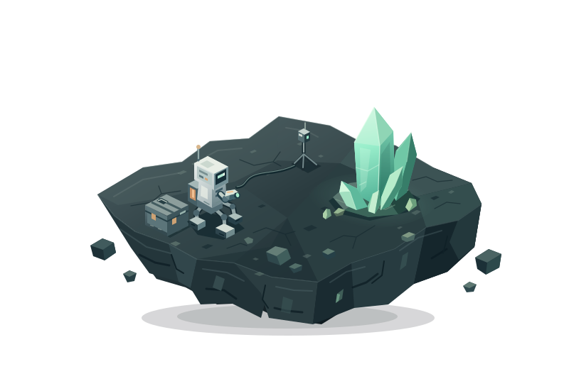

按壓與間隔
按多久，隔多久，
都能自己設定。
連點適合重複點按；長壓會按住指定秒數，再放開。每個按鍵都能各自調整。
按住放開／等待
WINDOWS 鍵盤・滑鼠自動化
把反覆要按的鍵設好，用快捷鍵開始，也用同一個鍵停下。連點或長壓、一次或循環，由你決定。

按住 1 秒，放開後等 1 秒。
自製動畫，非遊戲實機畫面。
01 把操作設好
不用寫腳本。選好按鍵、時間和執行方式，就能用群組快捷鍵控制。
連點適合重複點按；長壓會按住指定秒數，再放開。每個按鍵都能各自調整。
左鍵、右鍵都支援連點與長壓。游標放在哪裡，就從那個位置按下；AutoKey 不會移動游標。
把同一用途的按鍵放進群組，設定自己的快捷鍵。再按一次就停止，也能在程式中停止全部。
按「錄製按鍵」，再按下鍵盤按鍵；滑鼠左右鍵請在錄製區按下。確認結果後儲存。
錄製的是單一按鍵或快捷鍵，不是整套操作。02 先試一下
選個情境，按下開始。看看連點和長壓的差別，也試試隨時停下。
示範只在這個網頁播放，不會操作你的電腦。
像是需要按住互動鍵的採集動作。設定長壓時間，再留一段間隔，就能重複同樣的操作。
僅適用於允許自動化、且接受按鍵訊息的遊戲。此處不代表特定遊戲已通過測試。
這個範例每半秒按一次滑鼠左鍵。AutoKey 使用每次按下時的游標位置，不會替你移動滑鼠。
先把游標移到目標視窗內，再啟動。實際是否回應，仍取決於目標程式。
把 PageDown 設成連點，依固定間隔翻閱內容。想停下來細看，再按一次群組快捷鍵就好。
適用於接受 PageDown 的閱讀或檢視工具。請先用單一按鍵確認反應。
03 開始使用
在桌面程式裡完成這三步。設定會保存在本機，下次開啟後重新選擇目標即可。
指定接收輸入的程式。先送出一個簡單按鍵，確認它有反應。
建立群組，錄製要用的鍵。選連點或長壓，再設定時間和間隔。
選擇執行一次或循環，再設定群組快捷鍵。F8 只是例子，啟停鍵由你決定。
有些程式採用不同的輸入方式，即使視窗在前景也可能不接受。保持前景或提高權限，都無法保證相容。
只有接受背景按鍵訊息的程式，才會在切換視窗後繼續回應。AutoKey 不會把焦點搶回來。
群組內的按鍵同時起算。目前不支援依序輸出的動作或精確連招，多鍵組合效果也取決於目標程式。
05 常見問題
功能、設定與取得方式。
不一定。遊戲必須允許自動化，並且能接收 AutoKey 傳送的按鍵訊息。本頁的採集情境是自製動畫，不代表任何特定遊戲已通過相容性測試。
目前錄製功能用來設定單一鍵盤鍵、滑鼠左／右鍵，或群組快捷鍵，不會記錄一整段操作。群組內的按鍵同時起算，也不是依照清單順序執行。
不會。每次按下都使用當下的游標位置，放開時沿用該次按下位置。啟動前請把游標移到目標視窗內；若在視窗外，目標可能忽略這次輸入。
群組與語言偏好會保存在本機。首發版本不提供 Steam Cloud，也不會自動跨電腦同步。換電腦前請先備份自己的設定，重開程式後需重新選擇目標視窗。
桌面介面支援 31 種語言。預設跟隨 Windows 顯示語言，沒有對應時使用英文，也能手動選擇。官網提供 English、繁體中文和简体中文。
Steam 發布資訊待公告。目前可以先試跑這個網頁的示範，了解操作方式與使用限制。
從一個按鍵開始
先看操作，再決定適不適合。